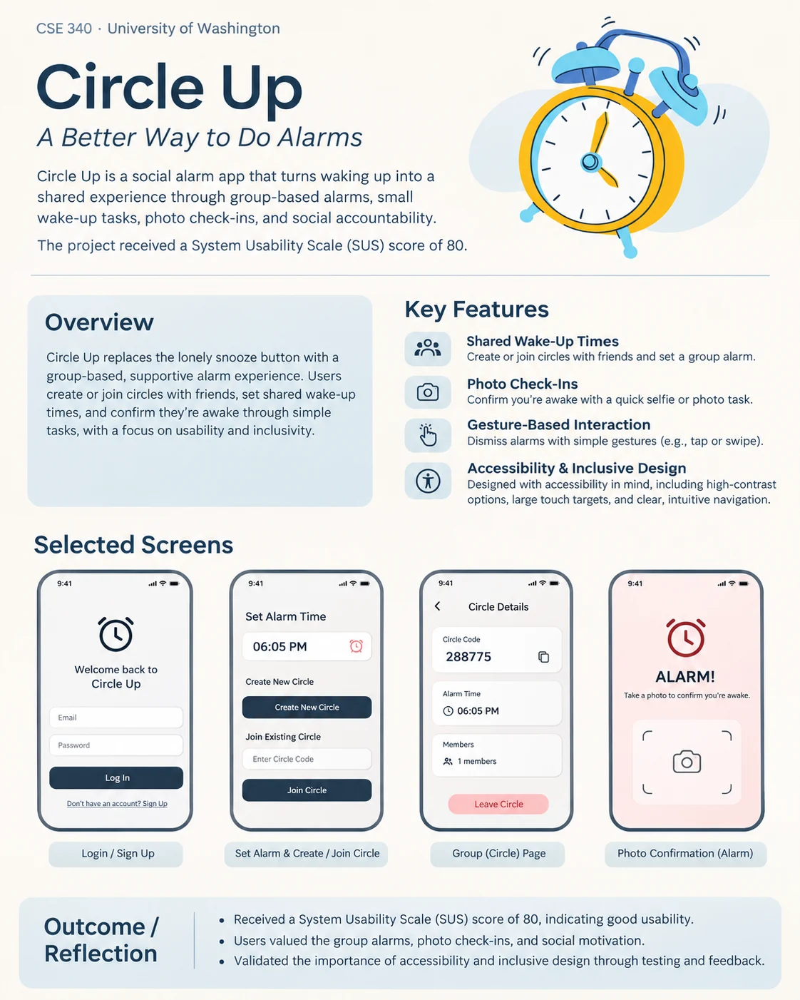

01 · CREATE
Make a circle.
Create a group with a shared alarm time, or join a friend's circle using a six-digit code.
What if waking up wasn't something we had to do alone?
My team imagined a group alarm that made mornings a little more social. Instead of just pressing snooze, friends could share a wake-up time and encourage each other to start the day.
Follow the story ↓ View the code ↗
We started with a familiar problem: an alarm can tell you when to wake up, but it cannot give you much motivation to actually get out of bed. We wondered whether a shared routine, a little accountability, and some playfulness might make mornings feel different.
Create a group with a shared alarm time, or join a friend's circle using a six-digit code.
At the circle's scheduled time, the app sends a notification inviting members to check in.
Take or select a photo, upload it, and browse the group's shared photo gallery.
One early idea was to make the experience feel like a group chat. If someone did not wake up on time, the group could send playful challenges, such as drawing something or taking a photo, to get them moving.
We eventually focused the implemented app on group reminders and photo check-ins rather than a full messaging or challenge system. The underlying idea stayed the same: make waking up a social experience, not just a sound from your phone.
We built the mobile application with Flutter and Firebase, connecting authentication, group creation, scheduled local notifications, persistent photo storage, and a swipeable gallery. The project pushed us to think about how the data, interface, and user experience fit together.
Our design also changed through testing. I especially liked the lesson that a product should make sense to the people who use it, not just to the people who built it. Feedback pointed to opportunities to make navigation and onboarding clearer.
Our reported overall System Usability Scale score after usability testing and revisions. A useful result, and a reminder that even a working app can become easier to learn.